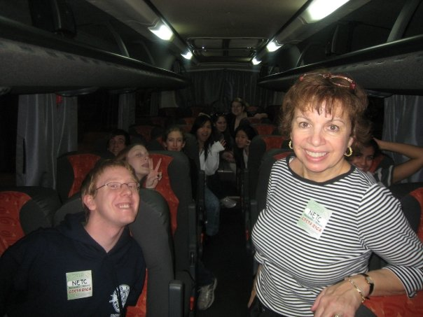

CENTRAL COSTA RICA
February, 2008
The first time I travelled without my parents was during my sophomore year of High School. It was my first taste of international travel that I can remember (since I was only 7 when I visited China/Hong Kong and was too young to really appreciate it) and I've been hooked ever since. My High School was hosting a week-long trip to Costa Rica and my friend, Livia, convinced me that I should go since she had already signed up. Not really knowing anything about the country except that they spoke Spanish and were somewhere South of us, I happily agreed and ended up loving the country more than I ever expected.

Our group was small (less than 13 people altogether) and included two of the most loved teachers at school - Señor Skorker and Señorita Lepore. During the majority of the trip, we traveled from destination to destination by bus. I am not usually a fan of bus tours, but our intimate group and hilarious tour guide, Juan Diego, made the entire trip incredibly fun.
Read Full Post